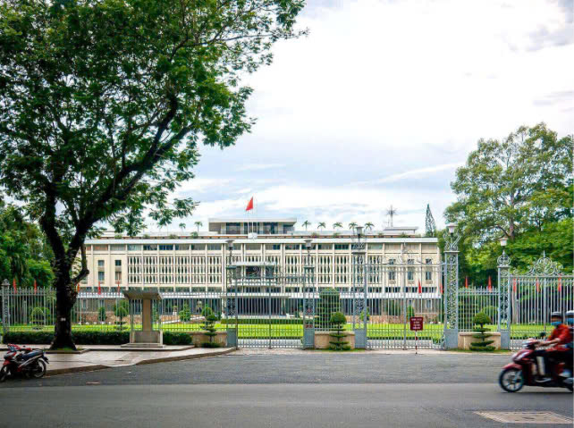

LỊCH SỬ DINH ĐỘC LẬP
Cuộc tấn công của thực dân Pháp
Năm 1858, thực dân Pháp chính thức nổ súng tấn công Đà Nẵng, mở đầu cho cuộc chiến tranh xâm lược Việt Nam. Từ đó, nước ta bắt đầu một thời kỳ dài đen tối, dưới sự áp bức của thực dân, kéo dài cho đến khi các lực lượng kháng chiến hình thành và trưởng thành.
Dinh Norodom và sự xây dựng của chính quyền Pháp
Năm 1868, sau khi chiếm xong Lục tỉnh Nam Kỳ, chính quyền Pháp bắt đầu thiết kế và xây dựng Dinh Norodom tại trung tâm thành phố Sài Gòn. Công trình được khởi công vào ngày 23 tháng 2 năm 1868 và hoàn thành vào năm 1871. Từ năm 1887 đến 1945, Dinh Norodom trở thành nơi ở và làm việc của nhiều đời Toàn quyền Pháp, thể hiện quyền lực và sự chiếm đóng của thực dân trên đất Việt.
Ảnh: Dinh toàn quyền vào khoảng năm 1875, khi mới được xây.
Nhật Bản và sự chuyển giao quyền lực
Ngày 9 tháng 3 năm 1945, phát xít Nhật đã tiến hành một cuộc đảo chính, hất cẳng thực dân Pháp và độc chiếm Đông Dương. Trong bối cảnh này, Dinh Norodom lại trở thành nơi làm việc của chính quyền Nhật tại Việt Nam, góp phần làm phức tạp thêm tình hình chính trị vốn dĩ đã rối ren tại đất nước.
Thời kỳ sau chiến tranh thế giới II và sự trở lại của Pháp
Tháng 9 năm 1945, sau khi Nhật thất bại trong Thế chiến II, thực dân Pháp trở lại và chiếm lại Nam Bộ, nơi Dinh Norodom một lần nữa trở thành trụ sở cho bộ máy chiến tranh xâm lược. Sự trở lại này đã khơi dậy tinh thần kháng chiến mạnh mẽ trong nhân dân Việt Nam, làm tăng thêm quyết tâm giải phóng dân tộc.
Sự chuyển giao cho chính quyền Việt Nam Cộng hòa
Ngày 7 tháng 9 năm 1954, Đại tướng Paul Ely đại diện cho Pháp đã trao Dinh Norodom cho Thủ tướng Ngô Đình Diệm, người đã quyết định đổi tên Dinh thành Dinh Độc Lập. Từ đây, Dinh trở thành nơi ở và làm việc của chính quyền Việt Nam Cộng hòa, gắn liền với những biến cố chính trị quan trọng trong giai đoạn này.
Chính quyền độc tài dưới thời Ngô Đình Diệm
Dưới chính quyền của Ngô Đình Diệm, Dinh Độc Lập không chỉ là nơi sinh sống của gia đình ông mà còn là trung tâm của những chính sách độc tài và áp bức. Chế độ gia đình trị và các cuộc chiến tranh với nhân dân đã tạo ra những làn sóng phản đối mạnh mẽ, ngay trong chính nội bộ chính quyền Sài Gòn.
Cuộc đảo chính ngày 27 tháng 2 năm 1962
Ngày 27 tháng 2 năm 1962, một cuộc đảo chính đã xảy ra khi hai phi công quân đội Sài Gòn, Nguyễn Văn Cử và Phạm Phú Quốc, cho ném bom Dinh Độc Lập, làm sập một phần lớn của công trình. Sự kiện này phản ánh sự bất ổn trong chính trị Việt Nam, với những cuộc nổi dậy ngày càng gia tăng.
Ảnh: Một góc Dinh Độc Lập cho vụ ném bom năm 1962.
Xây dựng lại Dinh Độc Lập
Không lâu sau đó, Ngô Đình Diệm quyết định khôi phục Dinh Độc Lập, với việc khởi công vào ngày 1 tháng 7 năm 1962. Tuy nhiên, việc xây dựng chưa hoàn thành thì ông bị ám sát trong một cuộc đảo chính vào ngày 02 tháng 11 năm 1963. Cuối cùng, Dinh Độc Lập được khánh thành vào ngày 31 tháng 10 năm 1966, dưới sự chủ trì của Tổng thống Nguyễn Văn Thiệu.
Ảnh: Nguyễn Văn Thiệu và Nguyễn Cao Kỳ (đeo kính đen) cắt băng khánh thành Dinh Độc Lập ngày 31 tháng 10 năm 1966.
Chiến dịch Hồ Chí Minh và ngày 30 tháng 4 năm 1975
Vào 10h45’ ngày 30 tháng 4 năm 1975, trong Chiến dịch Hồ Chí Minh lịch sử, xe tăng mang số hiệu 843 của quân giải phóng thuộc Đại đội 4, Tiểu đoàn 1, Lữ đoàn xe tăng 203, Quân đoàn 2 dẫn đầu đội hình đã húc nghiêng cổng phụ của Dinh Độc Lập. Tiếp đó, xe tăng mang số hiệu 390 đã húc tung cổng chính và tiến thẳng vào Dinh. Đến 11h30’ cùng ngày, Trung úy Bùi Quang Thận, đại đội trưởng chỉ huy xe tăng 843, đã hạ lá cờ 3 sọc xuống, kéo lá cờ mặt trận dân tộc giải phóng miền Nam Việt Nam lên. Cờ phấp phới tung bay trên nóc Dinh Độc Lập, đánh dấu sự kết thúc của 30 năm chiến tranh gian khổ và anh dũng của dân tộc. Cùng thời điểm này, Tổng thống cuối cùng của chế độ Việt Nam Cộng hòa, Dương Văn Minh, cùng toàn bộ nội các đã tuyên bố đầu hàng vô điều kiện chính quyền cách mạng. Dưới sự lãnh đạo của Đảng Cộng sản Việt Nam, quân và dân ta đã thực hiện được ý nguyện của Chủ tịch Hồ Chí Minh: Nhân dân 2 miền Nam – Bắc sum họp một nhà, khẳng định tinh thần và ý chí độc lập dân tộc, thống nhất đất nước đã toàn thắng.
Ảnh: Xe tăng tiến vào Dinh Độc Lập ngày 30/4/1975.
Ảnh: Chiếc xe tăng 843 húc đổ cổng Dinh Độc Lập ngày 30 tháng 4 năm 1975.
Di tích lịch sử và ý nghĩa văn hóa
Khi mảnh đất Việt Nam trải qua giai đoạn kháng chiến chống Mỹ, Dinh Độc Lập một lần nữa trở thành biểu tượng cho cuộc chiến tranh và sự kháng cự của nhân dân. Gắn liền với sự kiện lịch sử trọng đại của ngày 30 tháng 4 năm 1975, năm 1976, Dinh Độc Lập được công nhận là Di tích lịch sử văn hóa, thể hiện giá trị lịch sử và văn hóa sâu sắc của đất nước. Ngày nay, Dinh Độc Lập không chỉ là di tích quốc gia đặc biệt mà còn là điểm đến thu hút đông đảo khách du lịch trong nước và quốc tế, đồng thời cũng là nơi hội họp quan trọng của các lãnh đạo đất nước.
Ảnh: Dinh độc lập ngày nay.
VỊ TRÍ VÀ QUY MÔ DINH ĐỘC LẬP
Dinh Độc Lập, tọa lạc tại số 135, đường Nam Kỳ Khởi Nghĩa, phường Bến Thành, quận I, thành phố Hồ Chí Minh, có tổng diện tích 12 ha. Bốn mặt của di tích được bao quanh bởi các trục đường: phía Đông Bắc giáp đường Nam Kỳ Khởi Nghĩa; phía Tây Nam giáp đường Huyền Trân Công Chúa; phía Tây Bắc giáp đường Nguyễn Thị Minh Khai; và phía Đông Nam giáp đường Nguyễn Du. Dinh Độc Lập là một công trình kiến trúc đồ sộ và tráng lệ, không chỉ về mặt lịch sử mà còn về quy mô xây dựng.
Ảnh: Mặt chính của Dinh giáp với đường Nam Kỳ Khởi Nghĩa
Toàn bộ khuôn viên của Dinh trải rộng trên diện tích 12 ha, và bên cạnh dinh thự chính, không gian xanh với nhiều mảng cây cối tạo nên một môi trường thoáng đãng, yên bình. Về quy mô của công trình chính, dinh thự được xây dựng trên diện tích 4.500 m², với tổng diện tích sử dụng lên tới 20.000 m². Dinh cao 26 m, gồm 3 tầng chính, 2 gác lửng, 1 sân thượng, 1 tầng nền và 2 tầng hầm. Đây là công trình lớn nhất miền Nam Việt Nam vào giữa thập niên 1960 và có chi phí xây dựng cao nhất thời bấy giờ, lên tới 150.000 lượng vàng. Bên trong Dinh có nhiều phòng chức năng phục vụ cho công việc, họp hành, tiếp khách và nghỉ ngơi.
Ảnh: Khuôn viên Dinh Độc Lập với góc nhìn từ trên cao.
Việc thiết kế Dinh Độc Lập do kiến trúc sư Ngô Viết Thụ thực hiện, kéo dài từ năm 1962 đến năm 1967. Ông đã tìm kiếm một ý nghĩa văn hóa cho công trình bằng cách kết hợp hài hòa giữa nghệ thuật kiến trúc hiện đại và truyền thống phương Đông. Kiến trúc Dinh mang hình dáng chữ “CÁT” (吉), tượng trưng cho sự tốt lành, may mắn, và tâm điểm của Dinh là phòng Trình quốc thư. Hình chữ “KHẨU” (口) ở lầu thượng nhấn mạnh về giáo dục và tự do ngôn luận, trong khi cột cờ giữa tạo hình chữ “TRUNG” (中) như một lời nhắc nhở về dân chủ. Hình dáng của mái hiên và các tầng lầu tạo thành chữ “TAM” (三), thể hiện ý thức về ba yếu tố cần thiết cho đất nước hưng thịnh: Nhân, Minh, và Võ. Thiết kế nhiều tầng lầu ngang, dài đồng nhất gợi lên hán tự chữ “VƯƠNG” (王), thể hiện vương quyền, và tầng thượng nhỏ giữa tầng cuối biến chữ đó thành “CHỦ” (主), tượng trưng cho chủ quyền đất nước. Mặt tiền Dinh được trang trí công phu với bao lơn của lầu 2 và lầu 3 kết hợp với mái hiên lối vào, cùng hai cột gỗ, tạo thành hình chữ “HƯNG” (興), thể hiện khát vọng cho đất nước thịnh vượng.
Ảnh: Sự kết hợp giữa nghệ thuật kiến trúc hiện đại với kiến trúc truyền thống Phương Đông.
Chi tiết trang trí như rèm hoa đá, được cải biên từ cửa bàn khoa của các cung điện Huế, không chỉ tạo sự trang trí mà còn lấy ánh sáng tự nhiên. Những hồ nước hình bán nguyệt và hoa sen, hoa súng trong các hồ nước tạo nên một không gian gần gũi với thiên nhiên, gợi nhớ về các ngôi đình, chùa cổ. Nguyên tắc bố cục của Dinh rất tinh tế: tất cả các đường nét bên trong đều tuân theo nguyên tắc thẳng hàng, tạo sự cân đối, ngay cả những hình oval của sân cỏ và hồ nước cũng góp phần tạo sự mềm mại, uyển chuyển cho không gian đại sảnh.
Ảnh: Rèm hoa đá
Dinh Độc Lập không chỉ là biểu tượng lịch sử của thành phố Hồ Chí Minh mà còn thể hiện vẻ đẹp kiến trúc, nghệ thuật, và văn hóa Việt Nam.
Ảnh: Dinh Độc Lập ngày nay.
BẢN ĐỒ DINH ĐỘC LẬP
Ảnh: Bản đồ sơ lược Dinh Độc Lập.
Ảnh: Sơ đồ tòa nhà Dinh Độc Lập.
Join our community
Join our community to explore interesting stories about The Independence Palace, share your experiences and connect with people who have a passion for history. Together, we will preserve and spread the precious cultural and historical values of our nation.